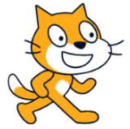
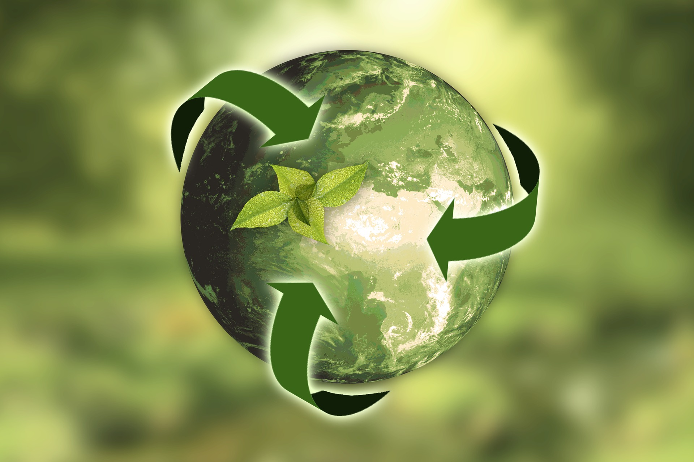
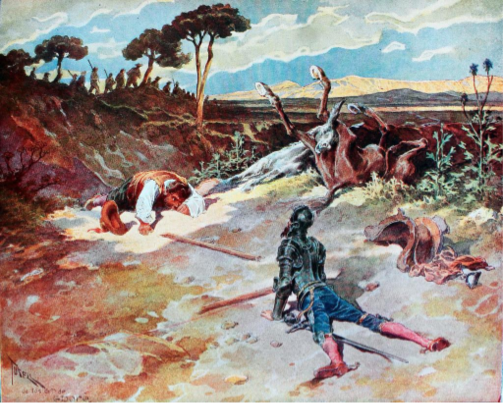
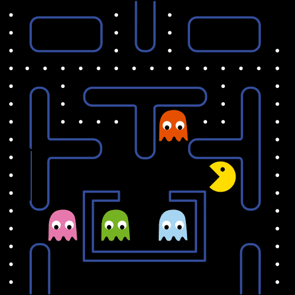

Diccionario
Scratch

Sostenible

Villano

Videojuego






¡Hola! ¿Estáis ahí, niños y niñas del planeta? Tenéis que ayudarme. Va a pasar algo terrible si no lo evitamos.
Uno de los villanos más temidos de los videojuegos ha anunciado que nuestro planeta está a punto de desaparecer para siempre. Él mismo se está encargando de hacer videojuegos cada vez más violentos que incitan a la lucha, el consumismo, la discriminación, el abuso de poder....
¡Parece imparable! Tenemos que hacer algo antes de que sea demasiado tarde. ¿Seremos capaces de elaborar videojuegos para salvar nuestro planeta?
¿Crees que podrás contribuir al desarrollo de un planeta más sostenible para que las próximas generaciones disfruten de este paraíso en el que vivimos, que es La Tierra?
¿Serías capaz de hacer un videojuego que haga de este mundo un lugar mejor, antes de que el villano consiga su propósito?
¡¡¡Conozco un programa llamado Scratch con el que puedes conseguirlo!!!
Definición:
Es una herramienta para programar fácil.
Ejemplo:
Con Scratch puedo programar presentaciones interactivas.
Definición:
Persona capaz de actuar de forma malvada.
Ejemplo:
El villano quiere destruir el planeta.
Definición:
Juego electrónico que se visualiza en una pantalla.
Ejemplo:
Con Scratch elaboraré mi primer videojuego.
Rétor pide ayuda a los niños y niñas del planeta.
Rétor dice que pasará algo terrible.
Un villano quiere destruir el planeta.
Ese villano hace videojuegos:
-Violentos.
-Invitan a consumir.
-Donde no tratan igual a las personas.
Pararemos al villano
antes de que destruya el planeta.
Conseguiremos:
-Hacer videojuegos para salvar el planeta.
-Los objetivos de desarrollo sostenible.
-Hacer un videojuego que tenga
un objetivo de desarrollo sostenible.
Usa Scratch para hacer el videojuego.
Definición:
Persona mala.
Ejemplo:
El villano destruye el planeta.
Definición:
Plural de videojuego
Juego electrónico que se ve en una pantalla.
Ejemplo:
Con Scratch creas tu videojuego.
Definición:
Que se mantiene mucho tiempo
sin hacer daño al medio ambiente.
Ejemplo:
Los objetivos de desarrollo sostenible salvan el planeta.
Definición:
Herramienta para programar fácil.
Ejemplo:
Con Scratch programas presentaciones interactivas.
Han enviado al colegio un video con un mensaje que tienes que escuchar. Para ello, haz clic en la bandera verde.
Jajajajaja.
Soy un villano de videojuegos.
Yo doy mucho miedo.
Tengo un mensaje para los niños y niñas.
Quiero destruir el planeta.
Lo voy a destruir con videojuegos.
Estos videojuegos son de:
-Matar
-Ser malo con los demás.
-Consumir.
Estos juegos os gustan mucho.
Yo voy a aprovecharme de que os gustan.
Soy muy malo.
Hay una forma de evitar
que destruya el planeta.
Hacer un videojuego que:
-Es divertido.
-Usa un objetivo de desarrollo sostenible.
Por ejemplo:
-Terminar con el hambre.
-Educación para todos.
-Igualdad de niños y niñas.
-Un mundo en paz.
No soy bueno.
Creo que nadie lo consigue.
En pareja dialoga sobre lo que has escuchado, y sentido en el audio. Reflexiona sobre estos aspectos:
Definición:
Que se puede mantener durante largo tiempo sin agotar los recursos o causar grave daño al medio ambiente.
Ejemplo:
Los objetivos de desarrollo sostenible salvarán el planeta.
Trabajando para conseguir este gran reto vas a aprender a crear tu primer videojuego y al mismo tiempo alcanzarás los siguientes objetivos:
Obra publicada con Licencia Creative Commons Reconocimiento Compartir igual 4.0